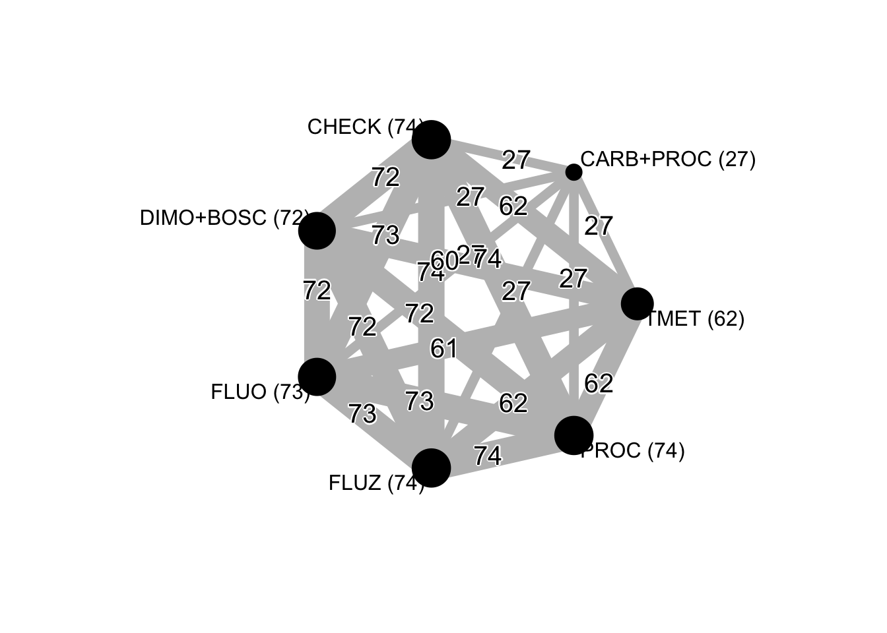

knitr::opts_chunk$set(echo = TRUE, warning = FALSE)Let’s fit an arm-based model using the rma.mv function of metafor to get the estimates for each treatment.
library(tidyverse)## ── Attaching packages ──────────────────## ✔ ggplot2 3.1.0 ✔ purrr 0.2.5
## ✔ tibble 2.0.1 ✔ dplyr 0.7.8
## ✔ tidyr 0.8.2 ✔ stringr 1.4.0
## ✔ readr 1.3.1 ✔ forcats 0.3.0## ── Conflicts ── tidyverse_conflicts() ──
## ✖ dplyr::filter() masks stats::filter()
## ✖ dplyr::lag() masks stats::lag()wm_inc <- read_csv("data/dat-inc.csv")## Parsed with column specification:
## cols(
## study = col_double(),
## year = col_character(),
## location = col_character(),
## state = col_character(),
## elevation = col_double(),
## region = col_character(),
## inc_check = col_double(),
## fungicide2 = col_character(),
## design_inc = col_double(),
## mean_inc = col_double(),
## mean_inc_qmr = col_double(),
## mean_inc_sd = col_double()
## )# Renaming the treatments for the network graph
library(plyr)## -------------------------------------------------------------------------## You have loaded plyr after dplyr - this is likely to cause problems.
## If you need functions from both plyr and dplyr, please load plyr first, then dplyr:
## library(plyr); library(dplyr)## -------------------------------------------------------------------------##
## Attaching package: 'plyr'## The following objects are masked from 'package:dplyr':
##
## arrange, count, desc, failwith, id, mutate, rename, summarise,
## summarize## The following object is masked from 'package:purrr':
##
## compactwm_inc$fungicide2 <- revalue(wm_inc$fungicide2, c("AACHECK-0" = "AACHECK"))
wm_inc$fungicide2 <- revalue(wm_inc$fungicide2, c("DIMO+BOSC-2" = "DIMO+BOSC"))
wm_inc$fungicide2 <- revalue(wm_inc$fungicide2, c("FLUO-2" = "FLUO"))
wm_inc$fungicide2 <- revalue(wm_inc$fungicide2, c("FLUZ-2" = "FLUZ"))
wm_inc$fungicide2 <- revalue(wm_inc$fungicide2, c("PROCY-2" = "PROC"))
wm_inc$fungicide2 <- revalue(wm_inc$fungicide2, c("TIOF-4" = "TMET"))
wm_inc$fungicide2 <- revalue(wm_inc$fungicide2, c("CARB+PROCY-2" = "CARB+PROC"))
detach("package:plyr", unload = TRUE)
# create the log of the inc variable
wm_inc <- wm_inc %>%
mutate(log_inc = log(mean_inc))
# create the sampling variance for the log of inc
wm_inc$vi <- with(wm_inc, (mean_inc_sd^2) / (4 * mean_inc^2))Now we will fit models with CS, HCS and UN matrix-covariance structure. We will then compare them with anova function to choose among the best model.
library(metafor)## Loading required package: Matrix##
## Attaching package: 'Matrix'## The following object is masked from 'package:tidyr':
##
## expand## Loading 'metafor' package (version 2.0-0). For an overview
## and introduction to the package please type: help(metafor).mv_inc_HCS <- rma.mv(log_inc, vi,
mods = ~fungicide2,
random = list(~fungicide2 | factor(study)),
struct = "HCS",
method = "ML",
data = wm_inc
)
mv_inc <- rma.mv(log_inc, vi,
mods = ~fungicide2,
random = list(~fungicide2 | factor(study)),
struct = "UN",
method = "ML",
control = list(optimizer = "nlm"),
data = wm_inc
)
mv_inc##
## Multivariate Meta-Analysis Model (k = 456; method: ML)
##
## Variance Components:
##
## outer factor: factor(study) (nlvls = 74)
## inner factor: fungicide2 (nlvls = 7)
##
## estim sqrt k.lvl fixed level
## tau^2.1 0.4956 0.7040 74 no AACHECK
## tau^2.2 1.8452 1.3584 27 no CARB+PROC
## tau^2.3 1.4674 1.2114 72 no DIMO+BOSC
## tau^2.4 1.5802 1.2571 73 no FLUO
## tau^2.5 1.2500 1.1180 74 no FLUZ
## tau^2.6 1.2222 1.1055 74 no PROC
## tau^2.7 0.8512 0.9226 62 no TMET
##
## rho.AACH rho.CARB rho.DIMO rho.FLUO rho.FLUZ rho.PROC
## AACHECK 1 0.8208 0.8745 0.8619 0.8889 0.8926
## CARB+PROC 0.8208 1 0.8967 0.9044 0.8668 0.9377
## DIMO+BOSC 0.8745 0.8967 1 0.9790 0.9452 0.9470
## FLUO 0.8619 0.9044 0.9790 1 0.9204 0.9224
## FLUZ 0.8889 0.8668 0.9452 0.9204 1 0.9828
## PROC 0.8926 0.9377 0.9470 0.9224 0.9828 1
## TMET 0.9366 0.8889 0.8995 0.8620 0.9029 0.9370
## rho.TMET AACH CARB DIMO FLUO FLUZ PROC TMET
## AACHECK 0.9366 - no no no no no no
## CARB+PROC 0.8889 27 - no no no no no
## DIMO+BOSC 0.8995 72 27 - no no no no
## FLUO 0.8620 73 27 72 - no no no
## FLUZ 0.9029 74 27 72 73 - no no
## PROC 0.9370 74 27 72 73 74 - no
## TMET 1 62 27 60 61 62 62 -
##
## Test for Residual Heterogeneity:
## QE(df = 449) = 37960.0871, p-val < .0001
##
## Test of Moderators (coefficient(s) 2:7):
## QM(df = 6) = 497.2427, p-val < .0001
##
## Model Results:
##
## estimate se zval pval ci.lb ci.ub
## intrcpt 3.3881 0.0833 40.6812 <.0001 3.2249 3.5513
## fungicide2CARB+PROC -1.8281 0.1315 -13.9024 <.0001 -2.0859 -1.5704
## fungicide2DIMO+BOSC -1.7237 0.0876 -19.6780 <.0001 -1.8954 -1.5520
## fungicide2FLUO -1.7034 0.0941 -18.0963 <.0001 -1.8879 -1.5189
## fungicide2FLUZ -1.5138 0.0756 -20.0367 <.0001 -1.6619 -1.3658
## fungicide2PROC -1.3642 0.0728 -18.7373 <.0001 -1.5069 -1.2215
## fungicide2TMET -0.7838 0.0519 -15.1082 <.0001 -0.8854 -0.6821
##
## intrcpt ***
## fungicide2CARB+PROC ***
## fungicide2DIMO+BOSC ***
## fungicide2FLUO ***
## fungicide2FLUZ ***
## fungicide2PROC ***
## fungicide2TMET ***
##
## ---
## Signif. codes: 0 '***' 0.001 '**' 0.01 '*' 0.05 '.' 0.1 ' ' 1We can see below that the UN structure is a better model.
anova(mv_inc_HCS, mv_inc)## df AIC BIC AICc logLik LRT pval QE
## Full 35 783.4193 927.7065 789.4193 -356.7096 37960.0871
## Reduced 15 811.7768 873.6141 812.8677 -390.8884 68.3575 <.0001 37960.0871AIC(mv_inc_HCS)## [1] 811.7768Let’s obtain the percent control from the estimated ratios.
efficacy_inc <- data.frame(cbind(
(1 - exp(mv_inc$b)) * 100,
(1 - exp(mv_inc$ci.lb)) * 100,
(1 - exp(mv_inc$ci.ub)) * 100
))
efficacy_incWe can set linear contrasts between treatments of interest and get the P-value using the anova function.
anova(mv_inc, L = rbind(
c(0, 1, -1, 0, 0, 0, 0),
c(0, 1, 0, -1, 0, 0, 0),
c(0, 1, 0, 0, -1, 0, 0),
c(0, 1, 0, 0, 0, -1, 0),
c(0, 1, 0, 0, 0, 0, -1),
c(0, 0, 1, -1, 0, 0, 0),
c(0, 0, 1, 0, -1, 0, 0),
c(0, 0, 1, 0, 0, -1, 0),
c(0, 0, 1, 0, 0, 0, -1),
c(0, 0, 0, 1, -1, 0, 0),
c(0, 0, 0, 1, 0, -1, 0),
c(0, 0, 0, 1, 0, 0, -1),
c(0, 0, 0, 0, 1, -1, 0),
c(0, 0, 0, 0, 1, 0, -1),
c(0, 0, 0, 0, 0, 1, -1)
))##
## Hypotheses:
## 1: fungicide2CARB+PROC - fungicide2DIMO+BOSC = 0
## 2: fungicide2CARB+PROC - fungicide2FLUO = 0
## 3: fungicide2CARB+PROC - fungicide2FLUZ = 0
## 4: fungicide2CARB+PROC - fungicide2PROC = 0
## 5: fungicide2CARB+PROC - fungicide2TMET = 0
## 6: fungicide2DIMO+BOSC - fungicide2FLUO = 0
## 7: fungicide2DIMO+BOSC - fungicide2FLUZ = 0
## 8: fungicide2DIMO+BOSC - fungicide2PROC = 0
## 9: fungicide2DIMO+BOSC - fungicide2TMET = 0
## 10: fungicide2FLUO - fungicide2FLUZ = 0
## 11: fungicide2FLUO - fungicide2PROC = 0
## 12: fungicide2FLUO - fungicide2TMET = 0
## 13: fungicide2FLUZ - fungicide2PROC = 0
## 14: fungicide2FLUZ - fungicide2TMET = 0
## 15: fungicide2PROC - fungicide2TMET = 0
##
## Results:
## estimate se zval pval
## 1: -0.1045 0.1122 -0.9313 0.3517
## 2: -0.1248 0.1079 -1.1559 0.2477
## 3: -0.3143 0.1193 -2.6353 0.0084
## 4: -0.4639 0.0989 -4.6923 <.0001
## 5: -1.0444 0.1160 -9.0024 <.0001
## 6: -0.0203 0.0488 -0.4157 0.6776
## 7: -0.2098 0.0615 -3.4113 0.0006
## 8: -0.3595 0.0601 -5.9839 <.0001
## 9: -0.9399 0.0768 -12.2375 <.0001
## 10: -0.1895 0.0720 -2.6318 0.0085
## 11: -0.3392 0.0708 -4.7898 <.0001
## 12: -0.9196 0.0888 -10.3590 <.0001
## 13: -0.1496 0.0389 -3.8484 0.0001
## 14: -0.7301 0.0695 -10.5031 <.0001
## 15: -0.5805 0.0587 -9.8896 <.0001In a network meta-analysis, it is important to check whether the results are consistent across the different designs. We included this variable manually in the original dataset and tested the interaction effect of treatments and design group.
mv_inc_incon <- rma.mv(log_inc, vi,
mods = ~fungicide2 * design_inc,
random = list(~factor(study) | design_inc / fungicide2),
struct = "UN",
method = "ML",
control = list(optimizer = "nlm"),
data = wm_inc
)
anova(mv_inc_incon, btt = 9:13)##
## Test of Moderators (coefficient(s) 9:13):
## QM(df = 5) = 2.9935, p-val = 0.7010anova(mv_inc, mv_inc_incon)## df AIC BIC AICc logLik LRT pval QE
## Full 35 783.4193 927.7065 789.4193 -356.7096 37960.0871
## Reduced 16 899.3586 965.3185 900.5978 -433.6793 153.9393 <.0001 28935.0016First we will rename the treatments with the number of trials (within parenthesis) that each treatment was present.
Sys.setlocale("LC_ALL", "pt_BR.UTF-8") # set UT-8 for displaying names correctly## [1] "pt_BR.UTF-8/pt_BR.UTF-8/pt_BR.UTF-8/C/pt_BR.UTF-8/en_US.UTF-8"library(tidyverse)
library(readr)
wm_inc <- read_csv("data/dat-inc.csv")
# Renaming the treatments for the network graph
library(plyr)
wm_inc$fungicide2 <- revalue(wm_inc$fungicide2, c("AACHECK-0" = "CHECK (74)"))
wm_inc$fungicide2 <- revalue(wm_inc$fungicide2, c("DIMO+BOSC-2" = "DIMO+BOSC (72)"))
wm_inc$fungicide2 <- revalue(wm_inc$fungicide2, c("FLUO-2" = "FLUO (73)"))
wm_inc$fungicide2 <- revalue(wm_inc$fungicide2, c("FLUZ-2" = "FLUZ (74)"))
wm_inc$fungicide2 <- revalue(wm_inc$fungicide2, c("PROCY-2" = "PROC (74)"))
wm_inc$fungicide2 <- revalue(wm_inc$fungicide2, c("TIOF-4" = "TMET (62)"))
wm_inc$fungicide2 <- revalue(wm_inc$fungicide2, c("CARB+PROCY-2" = "CARB+PROC (27)"))
detach("package:plyr", unload = TRUE)Now We need to prepare the data to get the network graph. Thus, we used the package netmeta with the function pairwise to calculate the contrasts.
library(netmeta)
pair_inc <- pairwise(
treat = factor(fungicide2),
n = 4,
mean = mean_inc,
sd = mean_inc_sd,
studlab = study,
data = wm_inc,
sm = "ROM"
)net_inc <- netmeta(TE, seTE, treat1, treat2, studlab, data = pair_inc, sm = "ROM", backtransf = TRUE)
summary(net_inc)## Number of studies: k = 74
## Number of treatments: n = 7
## Number of pairwise comparisons: m = 1198
## Number of designs: d = 5
##
## Fixed effect model
##
## Treatment estimate (sm = 'ROM'):
## CARB+PROC (27) CHECK (74) DIMO+BOSC (72) FLUO (73)
## CARB+PROC (27) . 0.3922 1.1497 1.0029
## CHECK (74) 2.5498 . 2.9314 2.5572
## DIMO+BOSC (72) 0.8698 0.3411 . 0.8723
## FLUO (73) 0.9971 0.3911 1.1463 .
## FLUZ (74) 0.8570 0.3361 0.9852 0.8594
## PROC (74) 1.0202 0.4001 1.1729 1.0231
## TMET (62) 1.2543 0.4919 1.4420 1.2579
## FLUZ (74) PROC (74) TMET (62)
## CARB+PROC (27) 1.1669 0.9802 0.7973
## CHECK (74) 2.9754 2.4993 2.0329
## DIMO+BOSC (72) 1.0150 0.8526 0.6935
## FLUO (73) 1.1635 0.9774 0.7950
## FLUZ (74) . 0.8400 0.6832
## PROC (74) 1.1905 . 0.8134
## TMET (62) 1.4636 1.2294 .
##
## Lower 95%-confidence limit:
## CARB+PROC (27) CHECK (74) DIMO+BOSC (72) FLUO (73)
## CARB+PROC (27) . 0.3789 1.1022 0.9622
## CHECK (74) 2.4636 . 2.8406 2.4807
## DIMO+BOSC (72) 0.8339 0.3306 . 0.8401
## FLUO (73) 0.9566 0.3794 1.1040 .
## FLUZ (74) 0.8186 0.3246 0.9439 0.8239
## PROC (74) 0.9786 0.3881 1.1281 0.9863
## TMET (62) 1.2113 0.4817 1.3959 1.2193
## FLUZ (74) PROC (74) TMET (62)
## CARB+PROC (27) 1.1146 0.9403 0.7700
## CHECK (74) 2.8734 2.4245 1.9906
## DIMO+BOSC (72) 0.9724 0.8201 0.6713
## FLUO (73) 1.1154 0.9422 0.7706
## FLUZ (74) . 0.8053 0.6588
## PROC (74) 1.1413 . 0.7883
## TMET (62) 1.4113 1.1915 .
##
## Upper 95%-confidence limit:
## CARB+PROC (27) CHECK (74) DIMO+BOSC (72) FLUO (73)
## CARB+PROC (27) . 0.4059 1.1991 1.0454
## CHECK (74) 2.6390 . 3.0251 2.6360
## DIMO+BOSC (72) 0.9073 0.3520 . 0.9058
## FLUO (73) 1.0393 0.4031 1.1903 .
## FLUZ (74) 0.8972 0.3480 1.0284 0.8965
## PROC (74) 1.0635 0.4125 1.2194 1.0614
## TMET (62) 1.2988 0.5024 1.4896 1.2977
## FLUZ (74) PROC (74) TMET (62)
## CARB+PROC (27) 1.2216 1.0219 0.8256
## CHECK (74) 3.0810 2.5765 2.0761
## DIMO+BOSC (72) 1.0595 0.8864 0.7164
## FLUO (73) 1.2137 1.0139 0.8201
## FLUZ (74) . 0.8762 0.7086
## PROC (74) 1.2418 . 0.8393
## TMET (62) 1.5179 1.2686 .
##
## Random effects model
##
## Treatment estimate (sm = 'ROM'):
## CARB+PROC (27) CHECK (74) DIMO+BOSC (72) FLUO (73)
## CARB+PROC (27) . 0.1878 0.9557 0.8773
## CHECK (74) 5.3246 . 5.0887 4.6715
## DIMO+BOSC (72) 1.0464 0.1965 . 0.9180
## FLUO (73) 1.1398 0.2141 1.0893 .
## FLUZ (74) 1.2670 0.2380 1.2109 1.1116
## PROC (74) 1.4465 0.2717 1.3824 1.2691
## TMET (62) 2.5639 0.4815 2.4503 2.2494
## FLUZ (74) PROC (74) TMET (62)
## CARB+PROC (27) 0.7893 0.6913 0.3900
## CHECK (74) 4.2025 3.6811 2.0768
## DIMO+BOSC (72) 0.8258 0.7234 0.4081
## FLUO (73) 0.8996 0.7880 0.4446
## FLUZ (74) . 0.8759 0.4942
## PROC (74) 1.1416 . 0.5642
## TMET (62) 2.0235 1.7725 .
##
## Lower 95%-confidence limit:
## CARB+PROC (27) CHECK (74) DIMO+BOSC (72) FLUO (73)
## CARB+PROC (27) . 0.1548 0.7817 0.7180
## CHECK (74) 4.3901 . 4.4727 4.1122
## DIMO+BOSC (72) 0.8558 0.1727 . 0.7978
## FLUO (73) 0.9328 0.1884 0.9467 .
## FLUZ (74) 1.0386 0.2102 1.0551 0.9697
## PROC (74) 1.1852 0.2400 1.2046 1.1074
## TMET (62) 2.1022 0.4248 2.1310 1.9588
## FLUZ (74) PROC (74) TMET (62)
## CARB+PROC (27) 0.6470 0.5665 0.3198
## CHECK (74) 3.7116 3.2524 1.8321
## DIMO+BOSC (72) 0.7196 0.6304 0.3549
## FLUO (73) 0.7848 0.6876 0.3871
## FLUZ (74) . 0.7665 0.4318
## PROC (74) 0.9990 . 0.4929
## TMET (62) 1.7680 1.5484 .
##
## Upper 95%-confidence limit:
## CARB+PROC (27) CHECK (74) DIMO+BOSC (72) FLUO (73)
## CARB+PROC (27) . 0.2278 1.1685 1.0720
## CHECK (74) 6.4580 . 5.7896 5.3069
## DIMO+BOSC (72) 1.2793 0.2236 . 1.0563
## FLUO (73) 1.3927 0.2432 1.2534 .
## FLUZ (74) 1.5457 0.2694 1.3896 1.2742
## PROC (74) 1.7654 0.3075 1.5864 1.4543
## TMET (62) 3.1269 0.5458 2.8173 2.5831
## FLUZ (74) PROC (74) TMET (62)
## CARB+PROC (27) 0.9628 0.8437 0.4757
## CHECK (74) 4.7582 4.1662 2.3542
## DIMO+BOSC (72) 0.9478 0.8301 0.4693
## FLUO (73) 1.0312 0.9030 0.5105
## FLUZ (74) . 1.0010 0.5656
## PROC (74) 1.3047 . 0.6458
## TMET (62) 2.3160 2.0290 .
##
## Quantifying heterogeneity / inconsistency:
## tau^2 = 0.2050; I^2 = 91.5%
##
## Tests of heterogeneity (within designs) and inconsistency (between designs):
## Q d.f. p-value
## Total 4435.98 376 0
## Within designs 4184.34 360 0
## Between designs 251.64 16 < 0.0001A network graph is composed of nodes (fungicide treatments) and edges or links between two treatments directly compared in a same trial. This graph allows to visualize how the treatments relate to each other and the number of direct comparisons can be depicted by the thickness of the edges, but also with numbers presented at the top of the links.
netgraph(net_inc,
plastic = FALSE,
col = "gray",
thickness = "number.of.studies",
points = TRUE,
col.points = "black",
cex.points = c("CARB+PROC (27)" = 2.5, "CHECK (74)" = 6, "DIMO+BOSC (72)" = 5.75, "FLUO (73)" = 5.83, "FLUZ (74)" = 6, "PROC (74)" = 6, "TMET (62)" = 5),
number.of.studies = TRUE,
cex.number.of.studies = 1.25,
col.number.of.studies = "black",
bg.number.of.studies = "white",
multiarm = FALSE,
col.multiarm = "gray",
pos.number.of.studies = 0.60
)